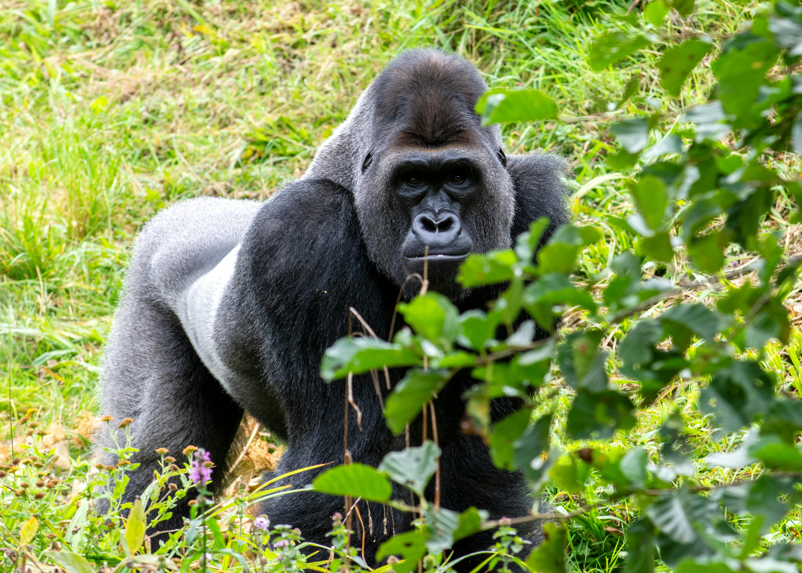

Viajes tropicales para todo el año

Los viajes tropicales te invitan a descubrir destinos exóticos en Asia, América, Oceanía y África, ofreciendo paisajes impresionantes y una biodiversidad única. Desde selvas exuberantes hasta playas de ensueño, estos lugares ofrecen experiencias inolvidables para todo tipo de viajeros.
Explora la selva, las montañas, los volcanes y las playas paradisíacas que caracterizan estos destinos tropicales. Ya sea navegando por los ríos del Amazonas o relajándote en una playa bajo palmeras, hay actividades para satisfacer todos los gustos.
Sumérgete en la rica biodiversidad de estos lugares, desde avistar gorilas en África hasta descubrir la vida marina en arrecifes de coral. Los viajes tropicales son una oportunidad para conectar con la naturaleza de manera profunda y emocionante.
En este artículo, te guiaremos a través de nuestros destinos tropicales favoritos y las experiencias más emocionantes que ofrecen. Prepárate para vivir aventuras inolvidables y crear recuerdos duraderos en estos paraísos terrenales.
Ruanda
Ruanda se ha convertido en un destino destacado en el panorama del turismo sostenible en África. En este país, se prioriza la responsabilidad medioambiental, especialmente en la industria del lujo. Esta dedicación se evidencia en la mayoría de los hoteles ruandeses, que implementan políticas sin plásticos y apuestan por energías limpias como la solar, además de promover el uso de mobiliario y textiles locales.
El principal atractivo de Ruanda es la experiencia de avistar gorilas en su hábitat natural, especialmente en el Parque Nacional de los Volcanes. Aquí, los visitantes pueden unirse a excursiones diarias en la selva en busca de estas fascinantes criaturas. Durante la visita, se permite observar a los gorilas a una distancia segura para minimizar cualquier impacto en su rutina diaria.
Es importante tener en cuenta que esta experiencia no es económica. El costo de la entrada para una visita a los gorilas puede ser elevado, alrededor de 1000€. Sin embargo, este precio contribuye a la protección contra los cazadores furtivos y a compensar a los agricultores locales cuyos cultivos podrían ser afectados por la presencia de gorilas, contribuyendo así a la conservación de la especie y al desarrollo de las comunidades locales.
Aunque es un viaje tropical increíble, también hay que considerar su costo. Solo la entrada en una de estas visitas a los gorilas cuesta alrededor de 1000€, un precio que se destina a mantenerlos a salvo de los cazadores furtivos y a dar compensaciones a los agricultores locales cuando los gorilas destruyen sus cultivos.
Ver másRuanda
Ruanda se ha convertido en un destino destacado en el panorama del turismo sostenible en África. En este país, se prioriza la responsabilidad medioambiental, especialmente en la industria del lujo. Esta dedicación se evidencia en la mayoría de los hoteles ruandeses, que implementan políticas sin plásticos y apuestan por energías limpias como la solar, además de promover el uso de mobiliario y textiles locales.
El principal atractivo de Ruanda es la experiencia de avistar gorilas en su hábitat natural, especialmente en el Parque Nacional de los Volcanes. Aquí, los visitantes pueden unirse a excursiones diarias en la selva en busca de estas fascinantes criaturas. Durante la visita, se permite observar a los gorilas a una distancia segura para minimizar cualquier impacto en su rutina diaria.
Es importante tener en cuenta que esta experiencia no es económica. El costo de la entrada para una visita a los gorilas puede ser elevado, alrededor de 1000€. Sin embargo, este precio contribuye a la protección contra los cazadores furtivos y a compensar a los agricultores locales cuyos cultivos podrían ser afectados por la presencia de gorilas, contribuyendo así a la conservación de la especie y al desarrollo de las comunidades locales.
Aunque es un viaje tropical increíble, también hay que considerar su costo. Solo la entrada en una de estas visitas a los gorilas cuesta alrededor de 1000€, un precio que se destina a mantenerlos a salvo de los cazadores furtivos y a dar compensaciones a los agricultores locales cuando los gorilas destruyen sus cultivos.
Ver más